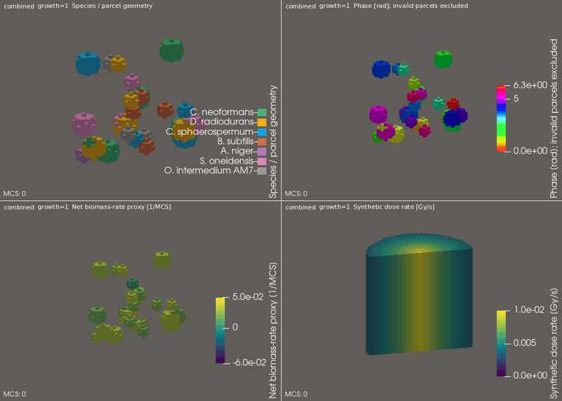
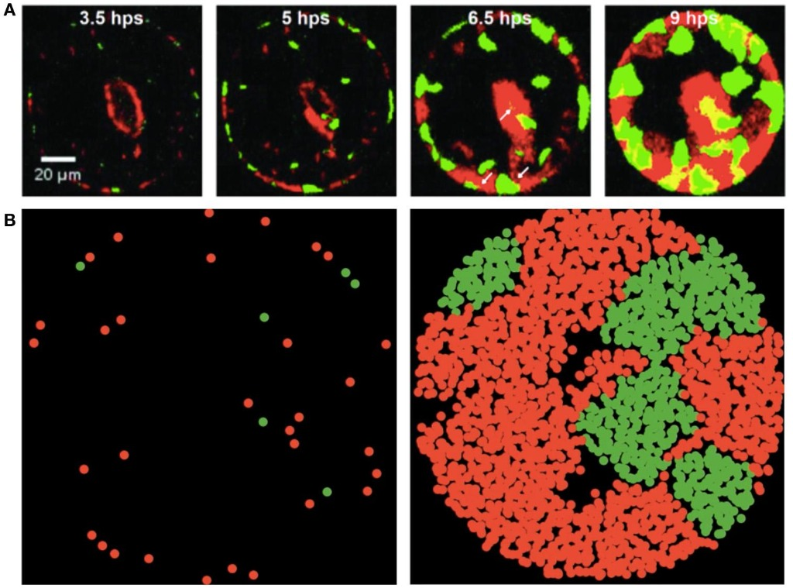

Companion portal preserving frozen Revision-0 fixture integrity while indexing R10 4D Geochemistry, Pool-Water Interactive CFD/Kinetics, Biofilms 3D CPM, Biotite & Biomagnetite 4D Magnetoreception (EG-1..EG-4), and TECDOC-643 Neutron Walk
Visual Companion to the Biofilm Spatial-Modeling Question (Living Biofilms H_6 vs. Abiotic Prebiotic Organization H_5):
This four-panel animation (multispecies_biofilm_robin_cylindrical_4panel.gif, 2,571,435 bytes, SHA-256 e73622d6454a3a6a...) places four modeled quantities from the aurascoper/Biofilms cylindrical Cellular Potts / Monod extension (diagnostics/fitness_phase/pv_workflow.py --clip, execution commit 841d052, config SHA-256 eb090aa3c0a97177...) in one view: (1) microbial species and parcel geometry, (2) a wrapped Kuramoto phase field, (3) a net biomass-rate proxy, and (4) a synthetic radial dose-rate field.
Connecting this visualization to the portal's research-program section preserves the strict boundary between living cellular biofilms (H_6) and abiotic prebiotic oligomer organization (H_5) without conflating the two:
Read the research-program document (local .md) |
GitHub Research-Program Document |
Underlying Simulation Repository (aurascoper/Biofilms) |
Open Interactive 3D Biofilms Explorer (Tab 4).
combined | growth=1 | MCS 0..200)
800 x 571 px | 219 frames

pvpython export (pv_workflow.py build OUTPUT/growth_1_seed_42/combined VIEW_CLIP --clip) on a 40 x 40 x 40 nonperiodic cylindrical lattice (legacy_nonperiodic_cylinder) with a whole-voxel plane cut through the cylinder axis (r = 0) so the interior dose peak is visible.0.0e+00 to 1.0e-02 Gy/s peaking at r = 0 with synthetic clock seconds_per_mcs = 60.0 s), not a calibrated OpenMC or coupled radiation-transport result (validate_coupled_config and tests/radiodialysis_basis_gate.jl refuse coupled transport until physical voxel pitch dx / D-PITCH and density rho are calibrated).growth_rate - hazard_rate ([-6.0e-02, +5.0e-02] 1/MCS), subtracting an instantaneous whole-parcel death commitment hazard (alpha_s * dD/dt) from a conditional biomass-specific Monod uptake/maintenance rate. Because these two terms have different currencies, their difference is an illustrative model proxy (net_biomass_rate_proxy), not the growth rate of any physical quantity, not realized biomass change, and not an experimentally measured growth rate.a * u + b * du/dn = g, specifically the ghost-point membrane wall flux condition -D_eff * dc/dr|_{r=R} = P_eff(t) * (c(R,t) - c_ext) at outer cylinder radius r = R in biofilms_potts.jl), and has zero connection to the European robin (Erithacus rubecula) or avian magnetoreception.Radiation OFF vs. Radiation ON (Fixed Initial Conditions)
Commit 841d052 | 256 Seeds (MCS 100) & 16 Seeds (MCS 200)
baseline / phase_only) vs. Radiation ON (survival_only / combined) while holding initial coordinates, founder IDs, phases, and all non-radiation parameters fixed separates the three outcomes:
(1) Survival (cpm-sp-v1, 256 seeds): axial dose removes 5,511 / 10,752 parcels near the axis;
(2) Biomass change (cpm-sp-growth-v1, 16 seeds): low-hazard D. radiodurans (+34,137) and C. neoformans (+6,142) expand into freed nutrient/space while high-hazard competitors lose biomass;
(3) Directional displacement (delta_r_i): all 7 species' 95% CIs span zero ([-0.0052, +0.0013] r/R), proving that survivor radius shifts outward via selective axial mortality (H0-B), not directed movement (H0-A).
clonal_sector_expansion_reference.jpg)
159,146 bytes, SHA-256 67865f346f4d2383...):3.5 hps, 5 hps, 6.5 hps, 9 hps; 20 um scale bar) of dual-labeled microbial expansion in a circular domain.MCS 200 in the top-left panel of the Robin cylindrical GIF) arises from local contact proliferation and space competition without requiring radiation-directed motility or magnetic-field sensing.Radiation ON - Radiation OFF) & Five Epistemic DistinctionsSpecies & Assumed Hazard Sensitivity (alpha_s) |
Outcome 1: Surviving Parcels (cpm-sp-v1, 256 Seeds, MCS 100) |
Population Survivor Radius Shift vs. Initial MCS 0 Survivor Radius | Outcome 3: Tracked Parcel Displacement delta_r_i (95% Bootstrap CI) |
Outcome 2: Net Biomass Change (cpm-sp-growth-v1, 16 Seeds, MCS 200) |
|---|---|---|---|---|
1. C. neoformans (0.010 Gy^-1, melanized) |
-1.74 [-1.88, -1.61] | +0.0086 vs. +0.0075 r/R (256/0) | +0.0011 [-0.0025, +0.0047] (NULL) | +6,142 [+1,021, +11,415] (alive: +1.6) |
2. D. radiodurans (0.002 Gy^-1, lowest hazard) |
-0.43 [-0.51, -0.35] | +0.0017 vs. +0.0004 r/R (256/0) | +0.0013 [-0.0010, +0.0036] (NULL) | +34,137 [+27,900, +40,681] (alive: +9.4) |
3. C. sphaerospermum (0.015 Gy^-1, melanized) |
-2.62 [-2.76, -2.47] | +0.0192 vs. +0.0210 r/R (255/1) | -0.0018 [-0.0061, +0.0026] (NULL) | -3,002 [-8,424, +2,098] (alive: -4.3) |
4. B. subtilis (0.040 Gy^-1) |
-4.48 [-4.62, -4.34] | +0.0382 vs. +0.0434 r/R (207/49) | -0.0052 [-0.0112, +0.0005] (NULL) | -13,293 [-17,223, -9,449] (alive: -8.4) |
5. A. niger (0.020 Gy^-1, melanized) |
-3.18 [-3.32, -3.04] | +0.0191 vs. +0.0212 r/R (251/5) | -0.0021 [-0.0068, +0.0026] (NULL) | -6,032 [-10,204, -1,805] (alive: -5.2) |
6. S. oneidensis (0.060 Gy^-1, highest hazard) |
-5.26 [-5.35, -5.16] | +0.0493 vs. +0.0538 r/R (145/111) | -0.0045 [-0.0117, +0.0027] (NULL) | -10,348 [-14,553, -6,117] (alive: -6.3) |
7. O. intermedium AM7 (0.030 Gy^-1) |
-3.82 [-3.97, -3.67] | +0.0356 vs. +0.0359 r/R (240/16) | -0.0003 [-0.0056, +0.0049] (NULL) | -10,264 [-14,877, -5,774] (alive: -6.5) |
| Artifact ID | Title & Role | Shareable / Local Link | SHA-256 & Size | Epistemic Qualification |
|---|---|---|---|---|
| R10-4D-SHAREABLE | 4D Spatiotemporal Geochemistry Viewer Standalone single-file HTML with inlined JS + 5-state Float32LE bundle |
spacetime_explorer_4d_shareable.html Upstream Ref: PR #10 (Merged: 942e3f8) |
f9ca39ea37503f0e... (132,358 bytes) |
Technical PASS Prescribed analytical Gaussian pulse; local verification; Stage 2 PDE solver not authorized. |
| POOLWATER-3D-INTERACTIVE-01 | Pool-Water Interactive Visualization 3D WebGL + 2D cut-plane + Gate 0-4 benchmark & surrogate loop / PIE demarcation viewer |
poolwater_interactive.html POOLWATER_WORKFLOW_SPEC.md | benchmark_manifest.json |
fa0f0dc30c45681a... (79,610 bytes) |
Gate 0-4 Verified Decouples `NeutronTransportReference`, `PoolThermalHydraulicsSynthetic`, `ReactorKineticsAlgebra`, and `SurrogateLoopBiofilmPIEBoundary`; missing CFD/PIV fields stay `UNAVAILABLE`. |
| BIOFILMS-3D-CPM-01 | Biofilms 3D Cellular Potts Consortium Explorer Read-only 3D WebGL + 2D slice + 256-seed 4-arm radial null ensemble & `cpm-sp-v1` / `cpm-sp-growth-v1` audit |
biofilms_3d_explorer.html aurascoper/Biofilms (c766e7b / de8d88e) |
037e2050b70e92b7... (869,267 bytes) |
Uncalibrated Reference 40x40x40 lattice (`D-PITCH: awaiting_measurement`, `seconds_per_mcs = NaN`); all 28 TOST 90% CIs lie inside `[-0.05, +0.05] r/R`. |
| BIOFILMS-ROBIN-CYL-GIF-01 | Multispecies Biofilm Spatial Model (4-Panel Robin Cylindrical GIF) Axis-clipped cylindrical 4-panel ParaView animation (`combined`, `growth=1`, Seed 42, MCS 0..200) + matched counterfactual & clonal sector reference |
multispecies_biofilm_robin_cylindrical_4panel.gif clonal_sector_expansion_reference.jpg | aurascoper/Biofilms (841d052, pv_workflow.py --clip) |
e73622d6454a3a6a... (2,571,435 bytes) Ref: 67865f34... (159,146 B) |
Synthetic visualization Robin wall BC at `r = R` (not avian magnetoreception); synthetic `dose_rate` (`0..0.01 Gy/s`) != calibrated transport; `net_biomass_rate_proxy` != measured growth; living `H_6` != abiotic `H_5`. |
| REF-NW-HTML-01 | TECDOC-643 Neutron Walk 10 MW MTR 3D core + 2D slice + OpenMC 0.15.3 playback design reference |
https://claude.ai/artifact/KcgJyGkRmxzpEFSc8Y12md Hosted Copy (.html) | Upstream Ref: PR #11 (718e9c6) |
dc15eb934fe6cd32... (937,606 bytes) |
Reference Audit Only "Real OpenMC" is 500-track playback (pre-Oct 19 materials); burnup is a 1-mat/element laptop demo (340.26 d vs ~298 d cluster). Preserved byte-identical per Gate 0. |
| REF-NW-JL-FIX | Quarantined TECDOC-643 Julia Fixture Transcribed blade sweep & burnup reactivity algebra test hook (institutional-scrubbed generic MTR edition) |
tecdoc643_reference_fixture.jl | ec440f838d6c7026... (6,018 bytes) Raw: 813c9e9f... (5,951 B) |
Quarantined Test Fixture Verifies generic `rho = (k-1)/k` algebra; does not transfer rectangular MTR results to annular MTR core. |
| OKLO-R0-FIXTURE | Oklo Revision-0 GUI Conformance Fixture Frozen 6-field 32x32x32 analytic benchmark |
oklo_r0_fixture_readonly.html CONFORMANCE_FIXTURE_SPEC.md |
8dac3ae9b8268a47... (77,117 bytes) |
Frozen Revision 0 Kept byte-identical per CONFORMANCE_FIXTURE_SPEC.md Section 2; never overwritten in place. |
| PR12-GEYSER-V0 | Quarantined Oklo Geyser Prototype & Research Program 10-part evidence-gated multiphysics research program and Revision-0 fixture audit |
10-Part Research Program (.md) Upstream Ref: Draft PR #12 (9e6bcf4) |
da50d4002e6bcca9... (48,056 bytes) |
Quarantined Draft Separate from PR #11 and frozen R0 fixture; not authorized for merge or physical solver claims. |
| BIOTITE-MAGNETORECEPTION-4D-01 | Biotite, Biomagnetite & Cryptochrome 4D Magnetoreception Explorer 3D/4D WebGL + 2D fallback + 4D tesseract hyperplane & D_4 scrubber + EG-1..EG-4 cross-domain epistemic gates + 1920x1080 PNG export |
magnetoreception_3d_explorer.html evidence_manifest.json | test_calculation_provenance_and_invariants.js |
ba18d4869398c6ae... (261,273 bytes) Manifest: 4f61d995... (116,876 B) |
EG-1..EG-4 Verified (v1.3.0) Separates Oklo (`uraninite`, `bitumen`, `illite`, `chlorite`) from unverified biotite (`oklo_reactor_zone_biotite_verified = false`); models 3-regime 1 um^3 biotite Fe3O4 sensitivity (`is_realistic_natural_default = false`). |
| INDEX-XML-01 | Machine-Readable XML Artifact Manifest Structured XML index of all URLs, relative portal paths, SHAs, and gates |
artifact_index.xml | XML 1.0 UTF-8 | Schema-Clean Index Zero en-dashes, zero em-dashes, zero workstation file URIs. |
| Gate / Domain | Model / Specimen Parameters & Provenance | Modeled Scale U_mag / (k_B * T) (50 uT, 300 K) |
Epistemic Boundary & Promotion Criteria |
|---|---|---|---|
| EG-1: Geochemical Provenance | Oklo RZ1-RZ16: uraninite, bituminous_organic_matter, illite, chlorite (Nagy 1991, 1993; Gauthier-Lafaye 1996) Comparative mica: biotite (Hansma 2022) |
oklo_reactor_zone_biotite_verified = false | Biotite is evaluated strictly as an independent comparative 2:1 phyllosilicate and prebiotic-scaffold hypothesis, never as a verified Oklo reactor-zone mineral. |
| EG-2: Physical Mechanism (Biogenic Fe3O4 vs Inclusion-Free Biotite) | Magnetosome chain: N=15, r=25 nm, M_s=4.8e5 A/m (V=9.817e-22 m^3) Volume-matched biotite: chi_v=1.0e-3 SI, Delta_chi=2.5e-4 SI, M_r=0 |
Fe3O4 chain: 5.688616 (300 K) | 5.5051 (310 K) Biotite Aniso: 5.894344e-8 | Iso: 2.357738e-7 Ferritin: 3.358569e-5 | Cry4a f_L: 1.401248 MHz |
Inclusion-free paramagnetic biotite is 9.65e7x weaker than a volume-matched magnetosome chain; 1 / omega_L = 113.58 ns is a physical Zeeman precession timescale, not a biological coherence threshold. |
| EG-2: 1 um^3 Natural Biotite Flake 3-Regime Fe3O4 Sensitivity | Scenario A: Idealized coherently aligned saturated SD (M = M_s) Scenario B: Partially remanent natural NRM (eta_NRM = 0.01) Scenario C: Unblocked SP / MD (chi_eff = 3.0, Delta_chi_eff = 0.5 SI) |
Scen A (0 / 0.01% / 1%): 6.0040e-5 / 0.5795 / 57.9438 Scen B (0 / 0.01% / 1%): 6.0040e-5 / 5.8544e-3 / 0.5795 Scen C Aniso: 6.0040e-5 / 7.2041e-5 / 1.2602e-3 Scen C Iso (tau=0): 6.0040e-5 / 1.3208e-4 / 7.2642e-3 |
All 3 regimes carry is_realistic_natural_default = false; requires FORC/Day hysteresis and NRM/IRM characterization. Uniform-field directional torque requires magnetic anisotropy (Delta_chi_eff != 0). |
| EG-2: 3-Tier Irradiation Boundary & Specimen-Encoding Gate | Park et al. (2004) A508 RPV steel (+16% H_c) Shong et al. (ASTM STP15114S) Fe/Ni wires (predominant H_c & B_r decrease) |
Tier 1: DIRECTLY_SUPPORTED Tier 2: ANALOGY_ONLY Tier 3: SEPARATE_BIOLOGICAL_HYPOTHESIS |
Colour-channel decision branches separate alloy phases/defects (EG-2 = false) from measured magnetic domains (EG-2 = true, EG-3 = false). |
| EG-3 & EG-4: Cellular Transduction & Evolutionary Origin | cpm-sp-v1 (256 seeds, 10,752 parcels, 841d052) & Sandia (2024) Cs-137 null | Survivor shift: +0.0493 r/R (H0-B) Parcel displacement delta_r_i: 0 (H0-A) |
Downstream eukaryotic mitochondrial/hyphal transduction (EG-3) and evolutionary co-option from Oklo or biotite to mam/mms or cryptochrome (EG-4) remain UNRESOLVED. |
| Audit Item | Recomputed from Displayed Rounded Inputs | Stored / Claimed Value | Engineering & Scientific Gate Disposition |
|---|---|---|---|
| TECDOC-643 Blade Worth (k = 0.97943 to 1.19810) | 18,634.714 pcm (+/- 120.375 pcm) | 18,635.3 pcm (+/- 120.0 pcm) | Preserve full unrounded source precision in Stage 2; compute derived values in code rather than hard-coding rounded strings. |
| Two-Point (2M) vs. Sweep (800k) Worth | 18,384.14 +/- 84.19 pcm vs. 18,635.3 +/- 120.0 pcm | 251.16 pcm difference (1.71 sigma) | Retain explicitly as an unresolved discrepancy until fixed-endpoint vs. rebuilt-per-position OpenMC inputs are audited in Stage 3. |
| Linear k_eff = 1 Burnup Crossing (Day 300 to 350) | Day 340.254042 | Day 340.261085 (Cluster: ~Day 298) | Label #burndata as a 294 K reduced-chain laptop demo, not validated paper data. |
| Day 0 to Day 5 Net Reactivity Drop | -3,214.224 pcm (k = 1.19676 to 1.15243) | -3,214 pcm | Report as total core reactivity change; do not attribute solely to Xe-135 + Sm-149 without isotopic worth decomposition, and do not multiply MTR equilibrium Xe-135 by an annular MTR shutdown factor (11.82x). |
| UO2-Clay-Fracture Coupled Framework & Polymer Gate | Re, Pe, Da, Bi, Ra regimes; OpenMC / PFLOTRAN / MOOSE | Field 4 Polymer Index in arbitrary units | Do not modify frozen oklo_gui_scratch/index.html; require empirical Gates E1 (G-value yield), E2 (kinetics), and E3 (measured attenuation) before modeling polymer-mediated radiation shielding. |
| Stage | Experimental Domain & Coupons | Primary Observables & Models | Strict Scientific & Regulatory Firewall |
|---|---|---|---|
| Stage 1: Surrogate Hydrodynamic & Water-Chemistry Loop | Non-nuclear bench flow cell Coupons: PIE-COUPON-SS316L-01, PIE-COUPON-AL6061-02 |
Controlled wall shear (`tau_w = 0.05..2.5 Pa`), temperature (`294..318 K`), conductivity, dissolved O2, and DIC/DOC speciation (`simulate_surrogate_loop_pie_materials_campaign()`). | Strictly decoupled from reactor core reactivity (`k_eff`) and pool thermal-hydraulics; implies zero fouling in operating MTR primary coolant. |
| Stage 2: Biofilm EPS/Melanin Rheology & Porous Resistance | OCT / Confocal z-stacks + parallel-plate rheometry | Storage/loss moduli (`G'`, `G''`), yield stress (`tau_y`), Darcy-Brinkman permeability reduction (`k_perm(phi_bio)`), and sloughing onset (`simulate_biofilm_porous_rheology_coupling()`). | Requires physical voxel pitch calibration (`D-PITCH`) and step time calibration (`seconds_per_mcs`) before converting CPM lattice steps to SI transport rates. |
| Stage 3: Sham-Controlled Radiation & Spin-Dynamics Assay | External irradiator / sham-coil rig (`0..500 uT`) Seeds 42..297 + `cpm-sp-v1` / `cpm-sp-growth-v1` |
Pre-registered 5-row planned-contrast matrix (15 cells vs. 24-cell full factorial); radical-pair spin Hamiltonian (`evaluate_radical_pair_magnetoreception_hypothesis()`). | `cpm-sp-v1` selection-vs-displacement is NULL (`5,511 / 10,752` axial deaths shift survivor radius up to `+0.0493 r/R` while all 7 identified-parcel displacement 95% CIs `delta_r_i` span zero); `cpm-sp-growth-v1` 15/16 synthetic phase-locking PASS is purely algorithmic; zero radiotrophy claim permitted without C-13/C-14 dark fixation + ATP/NADH + killed controls. |
| Stage 4: Post-Irradiation Examination (PIE) & Materials Qualification | Hot-cell / metallurgical coupon audit under `SOP-QMS-001` | SEM/EDS oxide film thickness (`14.2 nm` SS316L; `48.5 nm` Al-6061), ICP-MS leachate (`Fe, Cr, Ni, Al`), pitting factor (`1.08` vs `1.22`), Raman/XPS melanin-metal complexation. | Enforced by `verify_research_cgmp_firewall()` (`can_issue_cgmp_verdict = false`); exploratory research modules never alter clinical release or reactor safety envelopes. |
| Layer / Matrix Component | Specification & Mathematical Formulation | RadioPharmacology.jl / Portal Implementation Hook |
|---|---|---|
| 5-Row Planned-Contrast Matrix (15 Cells vs. 24-Cell Full Crossed Factorial) | Crosses 5 experimental rows with 3 genotypes per row (WT Melanized, Melanin-Deficient (Albino), Complemented Rescue = 15 condition-by-genotype cells): Row 1: Sham radiation (0 Gy) + baseline field (50 uT, sham-coil control); Row 2: Radiation (+grad I_gamma) + baseline field (50 uT, separating selection H0-B from active movement H0-A); Row 3: Radiation (+grad I_gamma) + rotated field orientation (+90 deg at 50 uT); Row 4: Radiation (+grad I_gamma) + reversed field direction (180 deg, +B -> -B at 50 uT, discriminating polarity-sensitive magnetite torque tau = m x B from polarity-insensitive radical-pair inclination compass); Row 5: Radiation (+grad I_gamma) + suppressed near-zero field (<0.1 uT). A fully crossed 24-cell design (2 Radiation x 4 Field states x 3 Genotypes) additionally tests rotated (+90 deg), reversed (180 deg), and suppressed (<0.1 uT) fields under sham radiation. |
BiofilmInference.simulate_biofilm_factorial_glmm() POOLWATER_WORKFLOW_SPEC.md Section 5 |
| Layer A: Hydrodynamics & Reactive Transport (Darcy-Brinkman-Stokes) | Conservative Darcy-Brinkman-Stokes hydrodynamics & reactive transport (div(u) = 0, budget residual < 1e-6; Kim & Yao 2026 arXiv:2610.01565) coupling free-fluid Navier-Stokes with porous biofilm momentum sink -(mu / K_perm) u and nutrient/oxygen/radiolytic species transport. |
BiofilmRheology.simulate_biofilm_porous_rheology_coupling() PoolThermalHydraulicsSynthetic (poolwater_interactive.html) |
| Layer B: Microbial Kinetics & Viscoelastic Biofilm Rheology | Separates species growth (mu_i), position-dependent mortality (d_i, Null H0-B), attachment (a_i), and detachment (e_i) from Oldroyd-B vs. generalized-Newtonian viscoelastic EPS rheology (G', G'', stress relaxation lambda_1) calibrated from independent rheograms (Charlton et al. 2019 PMC6707926; Li, Matous & Nerenberg 2022 doi:10.1002/bit.28056), alongside the discrete 40x40x40 CPM benchmark (cpm-sp-v1 & cpm-sp-growth-v1). |
BiofilmRheology.simulate_biofilm_porous_rheology_coupling() ingest_biofilms_3d_cpm_ensemble_benchmark() biofilms_3d_explorer.html (BIOFILMS-3D-CPM-01) |
| Layer C: Falsifiable Magnetic & Radiation Perturbations Around Null | Parameterizes candidate magnetic or radiation modulation of growth (theta_i) and active directional bias (gamma_i) as explicit perturbations around the null (H_0: theta_i = 0, gamma_i = 0; Dadachova et al. 2007; Maeda et al. 2012; Rishabh et al. 2023 arXiv:2312.06597; Gassab et al. 2026 arXiv:2605.00205). |
MagnetoreceptionHypotheses.evaluate_radical_pair_magnetoreception_hypothesis() |
| Layer D: Hierarchical Generalized Linear Mixed Model (GLMM) | Hierarchical GLMM g(E[Y_ijk(t)]) = beta_0 + beta_R*R + beta_B*B + beta_M*M + beta_RB*(RB) + beta_BM*(BM) + beta_RBM*(RBM) + b_batch + b_culture + f(t) with separated endpoint families (Gaussian LMM for tracked displacement delta_r_i and moduli G', G''; Poisson/Negative-Binomial GLMM for attachment/detachment counts; Binomial GLMM for survival proportion; Lee, Green & Ryan 2017 arXiv:1709.06288). |
BiofilmInference.simulate_biofilm_factorial_glmm() verifyEnsembleStatisticalIntegrity() |
<!-- Embed the Self-Contained Biotite, Biomagnetite & Cryptochrome 4D Magnetoreception Viewer --> <iframe src="https://aurascoper.github.io/oklo_shareable_portal/magnetoreception_3d_explorer.html" width="100%" height="860" style="border:1px solid #22364d;border-radius:8px;"></iframe> <!-- Embed the Self-Contained Pool-Water Interactive Benchmark Viewer --> <iframe src="https://aurascoper.github.io/oklo_shareable_portal/poolwater_interactive.html" width="100%" height="860" style="border:1px solid #22364d;border-radius:8px;"></iframe> <!-- Embed the Self-Contained 3D Cellular Potts Biofilms Consortium Explorer --> <iframe src="https://aurascoper.github.io/oklo_shareable_portal/biofilms_3d_explorer.html" width="100%" height="860" style="border:1px solid #22364d;border-radius:8px;"></iframe> <!-- Embed the Self-Contained 4D Spatiotemporal Geochemistry Viewer --> <iframe src="https://aurascoper.github.io/oklo_shareable_portal/spacetime_explorer_4d_shareable.html" width="100%" height="860" style="border:1px solid #22364d;border-radius:8px;"></iframe>